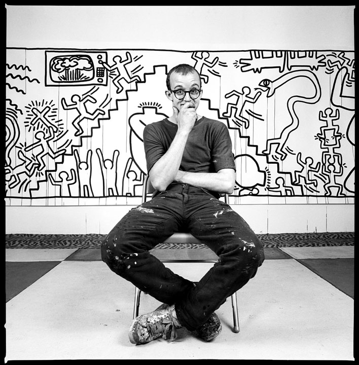

Keith Haring
(ur. 4 maja 1958 w Reading, zm. 16 lutego 1990 w Nowym Jorku) – amerykański artysta współczesny tworzący w nurtach pop-art i street art.
Kariera
Bardzo wcześnie zaczął interesować się sztuką. W latach 1976–1978 studiował grafikę na uczelni artystycznej The Ivy School of Professional Art w Pittsburghu. W wieku 20 lat przeniósł się do Nowego Jorku, gdzie zainspirowany sztuką graffiti rozpoczął studia w School of Visual Arts. Jego pierwsze prace zauważone przez szerszą publiczność to rysunki kredą w nowojorskim metrze, uwiecznione przez fotografa Tseng Kwong Chi. W 1980 artysta zorganizował wystawę w Klubie 57, wtedy też uczestniczył w "Times Square Exhibitons". Jego pierwsza znacząca ekspozycja odbyła się w prestiżowej Tony Shafrazi Gallery w 1981 r. W tym samym roku wziął udział w wystawie Documenta 7 w Kassel, w Niemczech. W 1982 poznał wielu innych artystów, między innymi: Futura 2000, Kenny'ego Scharfa, Madonnę i Jean-Michel Basquiat. W kolejnym roku brał udział w Whitney Biennial, jak również w São Paulo Biennale. W tym czasie poznał Andy'ego Warhola, który był tematem kilku jego prac np. Andy Mouse. Jego przyjaźń z Warholem odgrywała dużą rolę w sukcesie artystycznym.Życie prywatne
Urodził się w stanie Pensylwania, dorastał w Kutztown. Otwarcie przyznawał się do homoseksualizmu. W 1988 roku wykryto u niego wirusa HIV, co skłoniło go do założenia Keith Haring Foundation – fundacji zbierającej fundusze na rzecz organizacji opiekujących się dziećmi czy też chorymi na AIDS. Haring zmarł 16 lutego 1990 roku w wieku 31 lat, w wyniku powikłań związanych z AIDS| Tytuł dzieła | Rok powstania | Technika wykonania | Wartość |
| Tree of Life | 1958-1990 | akryl na płótnie | £1,000,000 – 1,500,000 |
| Andy Mouse--New Coke | 1958-1990 | akryl na płótnie | $1,800,000 – 2,500,000 |
| Untitled (Three Dancing Figures) | 1989 | emalia z poliuretanu na aluminium | $400,000 – 600,000 |
| Untited (Blue Dog) | 1985 | emalia poliuretanowa na stali | $200,000 – 300,000 |